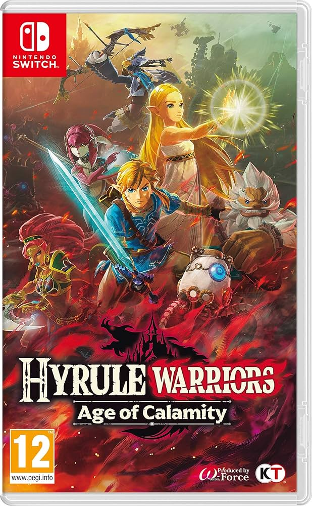

Age of Calamity ist ein Musou-Action-Prequel zu Breath of the Wild, das dramatische Schlachten und erzählerische Ergänzungen zur Vorgeschichte der Calamity liefert. Es kombiniert große Gefechte mit bekannten Figuren und fungiert als erzählerische Erweiterung des BotW-Universums.
| Titel | Hyrule Warriors: Age of Calamity |
| Veröffentlichung | 20. Nov. 2020 |
| Plattform | Nintendo Switch |
| Entwickler | Omega Force (Koei Tecmo) in Kooperation mit Nintendo |
| Produzent | Koei Tecmo / Nintendo |
| Komponist | Various |
Als Musou-Titel erzählt das Spiel eine Vorgeschichte zu Breath of the Wild: große Schlachtfelder, narrative Cutscenes und Massengefechte mit bekannten Figuren. Mechaniken sind hack-and-slash-zentriert, mit Charakter-Upgrades, Skill-Trees und Missionsvarianten. Die Erzählung ergänzt BotW-Lore, indem sie die Ereignisse vor der Calamity aus verschiedenen Perspektiven beleuchtet; Gameplay und Story sind eng verzahnt, um Fan-Interesse zu befriedigen.